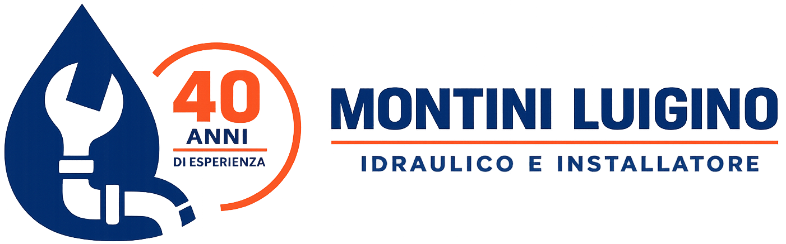

Tranquillo.
Ci penso io.
40 anni di esperienza
Chiamo, vengo, risolvo. Riparazioni, installazioni e impianti civili — con lavoro pulito e costi concordati prima di procedere.
● Pronto intervento se disponibile, altrimenti intervengo entro 24 ore
I LAVORI PARLANO DA SOLI
Foto dei lavori eseguiti.
← Scorri per vedere tutte le foto →
COSA FACCIO
Mi occupo di impianti civili e residenziali — case, appartamenti e uffici. Dalla piccola riparazione all'impianto completo, un solo professionista per ogni esigenza.
Se sono disponibile intervengo subito, altrimenti entro 24 ore. Perdite, allagamenti e guasti improvvisi.
Individuo e riparo perdite su tubazioni e impianti, anche quelle nascoste.
Realizzazione e rifacimento di impianti idraulici per abitazioni e uffici.
Sostituzione di sanitari, rubinetti e miscelatori a regola d'arte.
Installazione, sostituzione e manutenzione di caldaie e impianti di riscaldamento.
Installazione, manutenzione e messa a norma di impianti a gas.
Collegamento e installazione di sistemi aria/acqua e impianti idronici efficienti.
Installazione e manutenzione di climatizzatori, con gestione dei gas refrigeranti.
← Scorri per vedere tutti i servizi →
ESPERIENZA
In quarant'anni ho visto cambiare tutto: materiali, tecniche e impianti. Conosco a fondo i sistemi di una volta e padroneggio quelli di oggi.
ANNI DI ESPERIENZA
Idraulico e installatore
PERCHÉ SCEGLIERMI
Un mestiere imparato sul campo, non sui libri.
Valuto sul posto e concordo i costi con te prima di procedere.
Rispetto gli orari e ci sono quando serve davvero.
Curo i dettagli e lascio tutto in ordine.
Il preventivo preciso lo do dopo aver visto l'impianto di persona: prima di smontare non sempre si conosce l'esatto guasto. Eventuali extra te li comunico e li concordo sul posto, sempre prima di procedere.
ABILITAZIONI
Lavoro a norma e rilascio le certificazioni di conformità previste per gli impianti realizzati.
Abilitato a operare sui gas refrigeranti di condizionatori e pompe di calore.
Installazione, manutenzione e messa a norma di impianti a gas.
Rilascio le certificazioni di conformità per impianti gas, idrici, di riscaldamento e di condizionamento.
COLLABORAZIONI
Su richiesta collaboro con imprese edili e studi di progettazione per cantieri, ristrutturazioni e nuove realizzazioni.
RECENSIONI
Recensioni reali, verificabili direttamente sulla scheda Google.
su Google
Lame Nuredikaj
★★★★★
"Molto gentile e disponibile negli interventi d'urgenza. Attento e preciso sul lavoro."
Elisa Gramegna
★★★★★
"Artigiano serio, puntuale e preciso. Non ho mai avuto motivo di lamentarmi."
Antonio Artuso
★★★★☆
"Bravo e onesto idraulico. Molto attento e preciso."
Marina Bonandin
★★★★★
"Servizio efficiente e preciso a prezzi competitivi."
Fabio Bonarini
★★★★★
"Ottimo professionista, esperto e competente. Consigliato."
Giovanna Marcone
★★★★★
"Persona squisita, gentile e molto preparata. Lo consiglio vivamente."
ZONE SERVITE
Lavoro principalmente a Sesto San Giovanni, Milano e nell'hinterland nord. Sono disponibile anche per trasferte e lavori in tutta Italia.
DOMANDE FREQUENTI
Dipende dal lavoro. Valuto sempre sul posto prima di procedere e concordo il costo con te. Non inizio mai un intervento senza che siamo d'accordo sul preventivo.
Per le urgenze sì — il sabato sono disponibile per pronto intervento. I lavori programmati li organizziamo dal lunedì al venerdì.
Chiudi subito l'acqua dal contatore generale (di solito vicino all'ingresso o nel locale contatori). Poi chiamami: ti guido per telefono e vengo il prima possibile.
No, opero a Sesto San Giovanni, Milano e in tutto l'hinterland nord. Su richiesta mi sposto anche in altre province d'Italia.
Per i lavori valutabili senza sopralluogo sì. Per impianti o guasti più complessi, il sopralluogo mi permette di darti un prezzo preciso — concordiamo tutto prima di iniziare.
CONTATTI
Una telefonata e capiamo subito come risolvere.
{{ phone }}Dal lunedì al venerdì · Pronto intervento per urgenze il sabato
{{ email }}